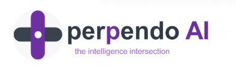
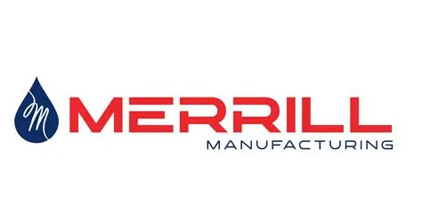
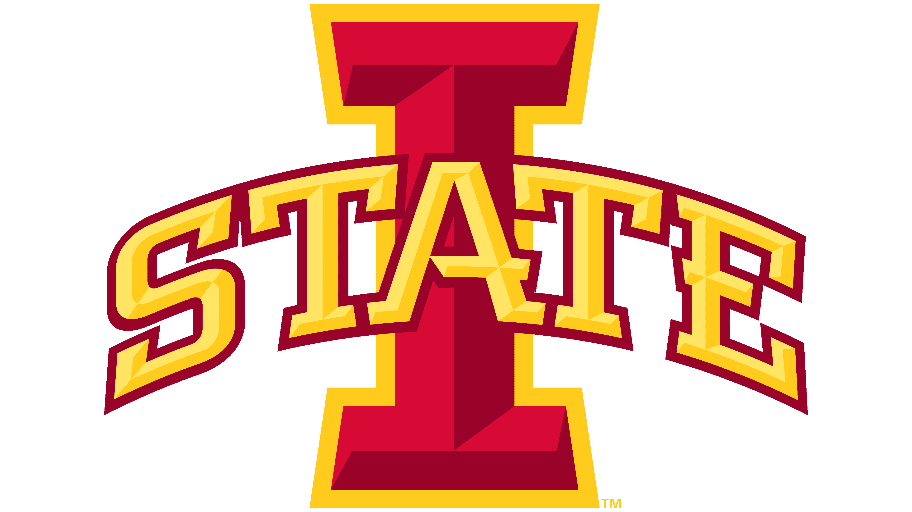

Software Engineer (Capstone Project)
Perpendo AI
Janurary 2026 – May 2026 • Remote
- Worked in team of 4 to Build a MVP of an agentic AI platform to process insurance underwriting documents and automate risk evaluation
- Developing a LangChain-based agentic pipeline to parse documents and extract structured underwriting data, with OpenTelemetry instrumentation for system observability.
- Implemented CI/CD pipelines and deployed services across AWS (EC2, DynamoDB, Lambda, API Gateway)

AI Software Engineering Intern
Merrill Manufacturing
September 2025 – May 2026 • Remote
- Engineered a full-stack AI assistant using React, Flask (Python), SuiteScript, PostgreSQL, and NetSuite's LLM module, enabling employees to query live ERP data in natural language.
- Built a multi-stage Agentic AI pipeline with Retrieval-Augmented Generation and a PostgreSQL conversational memory layer for context-aware interactions.
- Implemented a DeBERTa-based guardrail model to block prompt injection attacks and optimized agent orchestration, reducing response latency by 20%.
- Provisioned and deployed the AI assistant on AWS EC2, configuring the VM instance, scaling storage with EBS, and setting up an NGINX reverse proxy for secure, production-grade hosting.

Database Administrator Intern
Uline
May 2025 - August 2025
Responsible for optimizing SQL Server scripts, deploying database updates, and managing access permissions to support secure and efficient business operations.
- Optimized 2–3 SQL Server queries weekly, achieving up to 42% reduction in execution times, collaborating with the Senior DBA on ongoing performance tuning.
- Created stored procedures to detect log reader agent failures and partnered with the ESM team to integrate alerts into Nagios, improving replication visibility.
- Handled 20+ database operations including permission management, backups and UAT restores, stored procedure deployments across SYS/UAT/PROD, SSRS uploads, and automated tasks.
Lead Computer Science Tutor
Iowa State University - College of
Liberal Arts and Sciences
Aug 2024 – May 2025
Tutored six different courses: Python, OOP, Data Structures, Discrete Math, Computer Architecture, and Design and Analysis of Algorithms.
- Assisting other tutors with help if needed.
- Providing support for students in core CS subjects, enhancing project completion rates and exam performance.

Computer Science Tutor
Iowa State University - College of
Liberal Arts and Sciences
Aug 2023 – Aug 2024
Assisted over 100 students in core computer science concepts such as Data Structures, Object-Oriented Programming (OOP), and Discrete Mathematics.
- Created examples for students to use and study for upcoming exams, improving their exam grades.
- Provided comprehensive help in various languages such as Python and Java, leading to better project scores.
- Tutored 4 different courses: OOP, Python, Data Structures, and Discrete Mathematics.